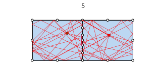
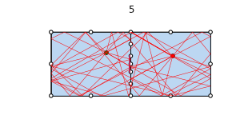
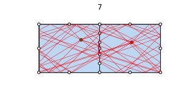
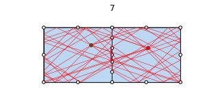

Ray Signatures¶
import time
from pylayers.gis.layout import *
from pylayers.antprop.signature import *
from pylayers.antprop.rays import *
<matplotlib.figure.Figure at 0x335c050>
L = Layout()
try:
L.dumpr()
except:
L.build()
L.dumpw()
Showing the graph of rooms with 2 rooms separated by a DOOR segment
L.showG('v')
a=plt.axis('off')

The graph of interactions is shown below.
L.showG('i',figsize=(20,20))
a=plt.axis('off')

All the interactions of a given cycle are stored as meta information in nodes of Gt
L.Gt.node[0]['inter']
['(3, 0)',
'(4, 0)',
'(7, 0)',
'(7, 0, 1)',
'(7, 1, 0)',
'(9, 0)',
'(9, 0, 1)',
'(9, 1, 0)',
'(8, 0)',
'(8, 0, 1)',
'(8, 1, 0)',
'(2, 0)']
The signature is calculated with as parameters the Layout object and two cycle numbers. In example below it is 0 and 1.
Si = Signatures(L,0,1)
The cold start determination of the signature is done with run1 function. The code is not finished here and there is room for significant acceleration in incorporating propagation based heuristics. The mitigation of combinatorics explosion is done in setting a cutoff vlaue which limits the exploration in the interaction graph.
Si.run1(cutoff=3)
An exhaustive search of signatures when no prior information is given is a combinatory hard problem. The number of signatures grows rapidly with the cutoff parameter.
The representaion method of a signature gives informations about the different signatures. Signatures are grouped by number of interactions.
Si
Signatures
----------
from cycle : 0 to cycle 1
1 : 3
[7 9 8]
[2 2 2]
2 : 18
[7 7 7 9 9 9 8 8 8 3 3 3 4 4 4 2 2 2]
[2 2 2 2 2 2 2 2 2 1 1 1 1 1 1 1 1 1]
[6 5 1 6 5 1 6 5 1 7 9 8 7 9 8 7 9 8]
[1 1 1 1 1 1 1 1 1 2 2 2 2 2 2 2 2 2]
3 : 69
[7 7 7 7 7 7 7 9 9 9 9 9 9 9 9 9 8 8 8 8 8 8 8 3 3 3 3 3 3 3 3 3 3 3 3 3 3
3 4 4 4 4 4 4 4 4 4 4 4 4 7 7 9 9 9 8 8 2 2 2 2 2 2 2 2 2 2 2 2]
[2 2 2 2 2 2 2 2 2 2 2 2 2 2 2 2 2 2 2 2 2 2 2 1 1 1 1 1 1 1 1 1 1 1 1 1 1
1 1 1 1 1 1 1 1 1 1 1 1 1 1 1 1 1 1 1 1 1 1 1 1 1 1 1 1 1 1 1 1]
[5 1 1 6 6 5 6 5 1 6 1 6 6 6 5 6 5 1 6 1 6 6 5 4 2 4 2 4 2 9 8 7 9 8 7 9 8
7 2 3 2 3 2 9 7 8 7 9 7 8 3 3 3 3 3 3 3 3 4 3 4 4 9 8 7 9 8 7 8]
[1 1 1 1 1 1 1 1 1 1 1 1 1 1 1 1 1 1 1 1 1 1 1 1 1 1 1 1 1 2 2 2 2 2 2 2 2
2 1 1 1 1 1 2 2 2 2 2 2 2 1 1 1 1 1 1 1 1 1 1 1 1 2 2 2 2 2 2 2]
[6 6 5 9 8 1 1 6 6 5 5 7 9 8 1 1 6 6 5 5 7 9 1 7 7 9 9 8 8 6 6 6 5 5 5 1 1
1 7 9 9 8 8 6 6 6 5 1 1 1 9 8 7 9 8 7 9 7 7 9 9 8 6 6 6 5 5 5 1]
[1 1 1 1 1 1 1 1 1 1 1 1 1 1 1 1 1 1 1 1 1 1 1 2 2 2 2 2 2 1 1 1 1 1 1 1 1
1 2 2 2 2 2 1 1 1 1 1 1 1 2 2 2 2 2 2 2 2 2 2 2 2 1 1 1 1 1 1 1]
4 : 258
[7 7 7 7 7 7 7 7 7 7 7 7 7 7 7 7 7 7 7 7 7 9 9 9 9 9 9 9 9 9 9 9 9 9 9 9 9
9 9 9 9 9 9 9 9 9 9 8 8 8 8 8 8 8 8 8 8 8 8 8 8 8 8 8 8 8 8 8 3 3 3 3 3 3
3 3 3 3 3 3 3 3 3 3 3 3 3 3 3 3 3 3 3 3 3 3 3 3 3 3 3 3 3 3 3 3 3 3 3 3 3
4 4 4 4 4 4 4 4 4 4 4 4 4 4 4 4 4 4 4 4 4 4 4 4 4 4 4 4 4 4 4 4 4 4 4 4 4
4 4 4 4 4 7 7 7 7 7 7 7 7 7 7 7 7 7 7 7 7 7 7 7 9 9 9 9 9 9 9 9 9 9 9 9 9
9 9 9 9 9 9 9 9 9 9 9 9 8 8 8 8 8 8 8 8 8 8 8 8 8 8 8 8 8 8 8 2 2 2 2 2 2
2 2 2 2 2 2 2 2 2 2 2 2 2 2 2 2 2 2 2 2 2 2 2 2 2 2 2 2 2 2 2 2 2 2 2 2]
[2 2 2 2 2 2 2 2 2 2 2 2 2 2 2 2 2 2 2 2 2 2 2 2 2 2 2 2 2 2 2 2 2 2 2 2 2
2 2 2 2 2 2 2 2 2 2 2 2 2 2 2 2 2 2 2 2 2 2 2 2 2 2 2 2 2 2 2 1 1 1 1 1 1
1 1 1 1 1 1 1 1 1 1 1 1 1 1 1 1 1 1 1 1 1 1 1 1 1 1 1 1 1 1 1 1 1 1 1 1 1
1 1 1 1 1 1 1 1 1 1 1 1 1 1 1 1 1 1 1 1 1 1 1 1 1 1 1 1 1 1 1 1 1 1 1 1 1
1 1 1 1 1 1 1 1 1 1 1 1 1 1 1 1 1 1 1 1 1 1 1 1 1 1 1 1 1 1 1 1 1 1 1 1 1
1 1 1 1 1 1 1 1 1 1 1 1 1 1 1 1 1 1 1 1 1 1 1 1 1 1 1 1 1 1 1 1 1 1 1 1 1
1 1 1 1 1 1 1 1 1 1 1 1 1 1 1 1 1 1 1 1 1 1 1 1 1 1 1 1 1 1 1 1 1 1 1 1]
[5 1 6 6 1 5 6 1 1 5 5 6 1 1 5 5 6 1 5 6 6 5 1 6 6 6 1 5 6 6 1 1 5 5 6 6 1
1 5 5 6 6 1 5 6 6 6 5 1 6 6 1 5 6 1 1 5 5 6 1 1 5 5 6 1 5 6 6 4 2 4 2 4 2
9 9 8 8 4 4 4 7 7 2 2 2 9 9 8 8 4 7 2 2 2 9 8 9 8 7 9 7 9 9 8 4 4 4 7 7 2
3 2 9 3 7 2 9 3 7 9 3 3 9 7 7 2 2 2 8 3 3 9 9 7 2 2 2 8 8 9 8 9 7 8 9 7 3
3 9 7 7 2 3 2 2 4 3 2 2 4 4 3 2 4 4 3 3 3 3 3 3 3 3 2 2 4 3 3 2 2 4 4 3 3
2 4 4 3 3 3 3 3 3 3 3 3 3 2 2 4 3 2 2 4 4 3 2 4 4 3 3 3 3 3 3 3 8 9 3 4 8
9 3 4 9 3 3 9 8 8 4 4 4 7 3 3 9 8 8 4 9 8 9 8 7 9 7 3 3 9 9 8 4 4 4 7 7]
[1 1 1 1 1 1 1 1 1 1 1 1 1 1 1 1 1 1 1 1 1 1 1 1 1 1 1 1 1 1 1 1 1 1 1 1 1
1 1 1 1 1 1 1 1 1 1 1 1 1 1 1 1 1 1 1 1 1 1 1 1 1 1 1 1 1 1 1 1 1 1 1 1 1
2 2 2 2 1 1 1 2 2 1 1 1 2 2 2 2 1 2 1 1 1 2 2 2 2 2 2 2 2 2 2 1 1 1 2 2 1
1 1 1 1 1 1 1 1 1 1 1 1 2 2 2 1 1 1 2 1 1 2 2 2 1 1 1 2 2 2 2 2 2 2 2 2 1
1 2 2 2 1 1 1 1 1 1 1 1 1 1 1 1 1 1 1 1 1 1 1 1 1 1 1 1 1 1 1 1 1 1 1 1 1
1 1 1 1 1 1 1 1 1 1 1 1 1 1 1 1 1 1 1 1 1 1 1 1 1 1 1 1 1 1 1 1 1 1 1 1 1
1 1 1 1 1 1 2 2 2 1 1 1 2 1 1 2 2 2 1 2 2 2 2 2 2 2 1 1 2 2 2 1 1 1 2 2]
[1 5 9 1 6 1 1 5 6 1 6 1 5 6 1 6 1 5 6 9 8 1 5 7 9 1 6 1 1 5 5 6 1 6 1 5 5
6 1 6 1 5 5 6 9 8 5 1 5 7 9 6 1 5 5 6 1 6 5 5 6 1 6 5 5 6 9 5 2 4 2 4 2 4
5 1 5 1 9 7 8 5 1 9 8 7 6 1 6 1 7 1 9 8 7 6 6 6 6 6 6 6 5 6 5 9 7 8 5 6 8
2 3 3 2 3 3 3 2 3 3 9 8 1 5 1 9 8 7 1 9 8 6 1 1 9 8 7 6 1 6 6 6 6 6 6 6 9
8 6 5 6 8 2 3 4 2 2 3 4 3 2 2 4 3 2 9 8 9 8 9 8 4 2 3 4 2 4 2 3 4 3 2 4 2
4 3 2 9 8 7 9 8 7 9 8 7 4 3 4 2 4 3 4 3 2 4 4 3 2 9 7 9 7 9 7 4 3 3 4 3 3
3 4 3 3 9 7 5 5 1 9 7 8 5 9 7 6 6 1 7 6 6 6 6 6 6 6 9 7 5 6 5 9 7 8 5 6]
[1 1 1 1 1 1 1 1 1 1 1 1 1 1 1 1 1 1 1 1 1 1 1 1 1 1 1 1 1 1 1 1 1 1 1 1 1
1 1 1 1 1 1 1 1 1 1 1 1 1 1 1 1 1 1 1 1 1 1 1 1 1 1 1 1 1 1 1 1 1 1 1 1 1
1 1 1 1 2 2 2 1 1 2 2 2 1 1 1 1 2 1 2 2 2 1 1 1 1 1 1 1 1 1 1 2 2 2 1 1 2
1 1 1 1 1 1 1 1 1 1 2 2 1 1 1 2 2 2 1 2 2 1 1 1 2 2 2 1 1 1 1 1 1 1 1 1 2
2 1 1 1 2 1 1 1 1 1 1 1 1 1 1 1 1 1 2 2 2 2 2 2 1 1 1 1 1 1 1 1 1 1 1 1 1
1 1 1 2 2 2 2 2 2 2 2 2 1 1 1 1 1 1 1 1 1 1 1 1 1 2 2 2 2 2 2 1 1 1 1 1 1
1 1 1 1 2 2 1 1 1 2 2 2 1 2 2 1 1 1 2 1 1 1 1 1 1 1 2 2 1 1 1 2 2 2 1 1]
[6 6 5 5 5 7 7 7 7 9 9 9 9 9 8 8 8 8 1 1 1 6 6 5 5 5 5 7 7 7 7 7 9 9 9 9 9
9 8 8 8 8 8 1 1 1 1 6 6 5 5 5 7 7 7 7 9 9 9 9 9 8 8 8 8 1 1 1 7 7 9 9 8 8
6 6 6 6 6 6 6 6 6 6 6 6 5 5 5 5 5 5 5 5 5 7 7 9 9 9 8 8 1 1 1 1 1 1 1 1 1
7 7 7 9 9 9 9 8 8 8 6 6 6 6 6 6 6 6 6 5 5 5 5 5 5 5 5 5 5 7 7 9 9 9 8 8 1
1 1 1 1 1 7 7 7 7 9 9 9 9 9 8 8 8 8 6 6 5 5 1 1 7 7 7 7 7 9 9 9 9 9 9 8 8
8 8 8 6 6 6 5 5 5 1 1 1 7 7 7 7 9 9 9 9 9 8 8 8 8 6 6 5 5 1 1 7 7 7 9 9 9
9 8 8 8 6 6 6 6 6 6 6 6 6 5 5 5 5 5 5 7 7 9 9 9 8 8 1 1 1 1 1 1 1 1 1 1]
[1 1 1 1 1 1 1 1 1 1 1 1 1 1 1 1 1 1 1 1 1 1 1 1 1 1 1 1 1 1 1 1 1 1 1 1 1
1 1 1 1 1 1 1 1 1 1 1 1 1 1 1 1 1 1 1 1 1 1 1 1 1 1 1 1 1 1 1 2 2 2 2 2 2
1 1 1 1 1 1 1 1 1 1 1 1 1 1 1 1 1 1 1 1 1 1 1 1 1 1 1 1 1 1 1 1 1 1 1 1 1
2 2 2 2 2 2 2 2 2 2 1 1 1 1 1 1 1 1 1 1 1 1 1 1 1 1 1 1 1 1 1 1 1 1 1 1 1
1 1 1 1 1 2 2 2 2 2 2 2 2 2 2 2 2 2 1 1 1 1 1 1 2 2 2 2 2 2 2 2 2 2 2 2 2
2 2 2 1 1 1 1 1 1 1 1 1 2 2 2 2 2 2 2 2 2 2 2 2 2 1 1 1 1 1 1 2 2 2 2 2 2
2 2 2 2 1 1 1 1 1 1 1 1 1 1 1 1 1 1 1 1 1 1 1 1 1 1 1 1 1 1 1 1 1 1 1 1]
L.Gt.pos
{0: (7.5, 0.0), 1: (2.5, -0)}
ptx = np.array(L.Gt.pos[0])+np.random.rand(2)
prx = np.array(L.Gt.pos[1])+np.random.rand(2)
print ptx
print prx
[ 7.71597394 0.75891616]
[ 2.98535781 0.88475396]
Evaluate performances of signature and ray evaluation
tt1 = {}
tt2 = {}
tint={}
tsig={} # number of sig
tray={} # number of rays
maxcutoff=7
for cutoff in range(maxcutoff):
del Si
Si = Signatures(L,0,1)
tic1=time.time()
Si.run1(cutoff=cutoff)
tic2=time.time()
r2d = Si.rays(ptx,prx)
tic3=time.time()
Si.num()
Nr = len(r2d)
tt1[cutoff]=tic2-tic1
tt2[cutoff]=tic3-tic2
tint[cutoff]=Si.nint
tsig[cutoff]=Si.nsig
tray[cutoff]=Nr
print cutoff,tt2[cutoff]
# L.display['ednodes']=False
# r2d.show(L)
0 0.00187706947327
1 0.0103240013123
2 0.050666809082
3 0.204124927521
4 0.659407138824
5 1.75280785561
6 4.32636713982
It appears that the increasing number of signatures obatined with the run1 algorithm do not yield necessarily a significant increase in the number of rays.
p1=semilogy(tt1.keys(),tray.values(),'ob')
p2=semilogy(tt1.keys(),tsig.values(),'or')
legend((p1[0],p2[0]),('rays','signature'),loc='best')
xlabel('cutoff')
ylabel('#')
<matplotlib.text.Text at 0x41c1890>
#b1=bar(tt2.keys(),tt2.values(),color='red')
#b2=bar(tt1.keys(),tt1.values(),color='blue')
#b1=semilogx(tt2.keys(),log10(tt2.values()),color='red')
#b2=semilogx(tt1.keys(),log10(tt1.values()),color='blue')
#b3=semilogx(tt1.keys(),log10(0.1*(arange(10))**3),color='green')
b1=loglog(tt2.keys(),tt2.values(),'k.')
b2=loglog(tt1.keys(),tt1.values(),'r.')
b3=loglog(tt1.keys(),0.1*arange(maxcutoff)**3,color='green')
b4=loglog(tt1.keys(),0.001*arange(maxcutoff)**2,color='green')
b5=loglog(tt1.keys(),0.1*arange(maxcutoff)**4.4,color='cyan')
legend((b1[0],b2[0],b3[0],b4[0],b5[0]),('rays','signature',r'$O(N^3)$',r'$O(N^2)$',r'$O(N^{4.4})$'),loc='best')
xlabel('cutoff')
ylabel('time (s)')
<matplotlib.text.Text at 0x4459210>
b1=loglog(tt2.keys(),tint.values(),color='red')
b2=loglog(tt1.keys(),tsig.values(),color='blue')
#b3=loglog(tt1.keys(),arange(maxcutoff)**3,color='green')
#b4=loglog(tt1.keys(),arange(maxcutoff)**2,color='green')
#legend((b1[0],b2[0],b3[0],b4[0]),('interactions','signatures',r'$O(N^3)$',r'$O(N^2)$'),loc='best')
legend((b1[0],b2[0]),('interactions','signatures'),loc='best')
xlabel('cutoff')
ylabel('#')
<matplotlib.text.Text at 0x41dee90>
#b1=loglog(tsig.values(),tt1.values(),color='red')
b2=loglog(tint.values(),tt2.values(),color='red')
b3=loglog(tint.values(),0.0004*array(tint.values())**0.88,color='blue')
xlabel('# Interactions')
<matplotlib.text.Text at 0x46941d0>

plot(tint.values(),tt2.values(),color='red')
plot(tint.values(),0.0004*array(tint.values())**0.88,color='blue')
[<matplotlib.lines.Line2D at 0x4888c10>]
The computation time in rays grows exponentially with the number of interactions.
b1=loglog(tt2.keys(),tint.values(),color='red')
b2=loglog(tt2.keys(),array(tt2.keys())**5,color='blue')

for k in range(maxcutoff):
r2d.show(L,i=k+1,colray='red',widthray=0.5)
title(str(k+1))


 

 

fig,ax=r2d.show(L,i=1,figsize=(20,10),colray='red',widthray=3)
fig,ax=r2d.show(L,i=1,colray='green',widthray=2,fig=fig,ax=ax)
fig,ax=r2d.show(L,i=2,colray='blue',widthray=1,fig=fig,ax=ax)
fig,ax=r2d.show(L,i=3,colray='black',widthray=1,fig=fig,ax=ax)
fig,ax=r2d.show(L,i=4,colray='green',widthray=0.5,fig=fig,ax=ax)
fig,ax=r2d.show(L,i=5,colray='green',widthray=0.5,fig=fig,ax=ax)
fig,ax=r2d.show(L,i=6,colray='green',widthray=0.5,fig=fig,ax=ax)
fig,ax=r2d.show(L,i=7,colray='green',widthray=0.5,fig=fig,ax=ax)
#fig,ax=r2d.show(L,i=8,colray='green',widthray=0.5,fig=fig,ax=ax)
#fig,ax=r2d.show(L,i=9,colray='green',widthray=0.5,fig=fig,ax=ax)
from IPython.core.display import HTML
def css_styling():
styles = open("../styles/custom.css", "r").read()
return HTML(styles)
css_styling()